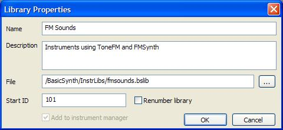

A project includes embedded instrument definitions that are unique to the project. If you want to reuse the instrument in another project it is necessary to duplicate the instrument configuration in both projects. Instrument libraries allow creating instrument configurations that can be shared by multiple projects.
An instrument library is an XML format file that contains the same structure as the instrlib tag in a project file. In fact, the instrument definition in a project is simply an embedded instrument library. Thus, you can create instrument libraries by copying the instrlib section of a project to a separate file. The library file should have an extension of .bslib to distinquish it from a project file. Also, be sure to include the xml processing instruction at the top of the file.
BasicSynth includes functions that create library files interactively. Select the Libraries item in the project tree and select the New file function then fill in the library information and file name and press OK. When selecting a file name, it is best to put all the libraries into a single directory that is different from the project directory. An empty library file is created and a reference to the library is added to the project.
Instruments cannot be created directly in a library. Instead you must create the instrument in the project and then copy it to the library. Click on the library name in the project tree and then select the copy function from the popup context menu. A list of project instruments will be listed so that you can select the instrument to add to the library.
Instruments in a library can be edited just was with project specific instruments. However, changing the library entry will affect all projects that reference the library. If you only want the changes to apply to the current project, you must copy the instrument from the library to the project instruments list. This allows using the library instrument as a template, or starting configuration, for the project instrument without affecting other projects that use the instrument.
Each instrument available to the sequencer must have a unique name and number. When you combine multiple libraries into a project, it is possible for names and numbers to conflict. Thus, when creating a library, you should insure the instrument names are unique accross all projects and libraries. An easy way to do this is to add a prefix to each name in the library indicating that it is part of a library. For example, an instrument in a library named "Keyboards" might have the name "Keyboards:Piano" or something similar. This creates what computer programmers call a namespace and insures names are unique. In addition, you should number the instruments in the library so that they have a non-overlapping range of numbers with other libraries. For example, you might reserve instrument numbers 1-100 for project instruments, 200-300 for the first library, 300-400 for a second library, etc. Instrument numbers should be less than 16384 since the instrument manager automatically assigns instrument numbers starting at 16384 if instrument numbers conflict. The library properties form allows renumbering the library if needed. Open the properties, enter the starting number and check the Renumber check box.